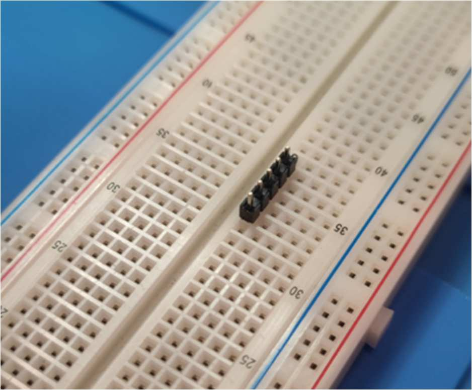
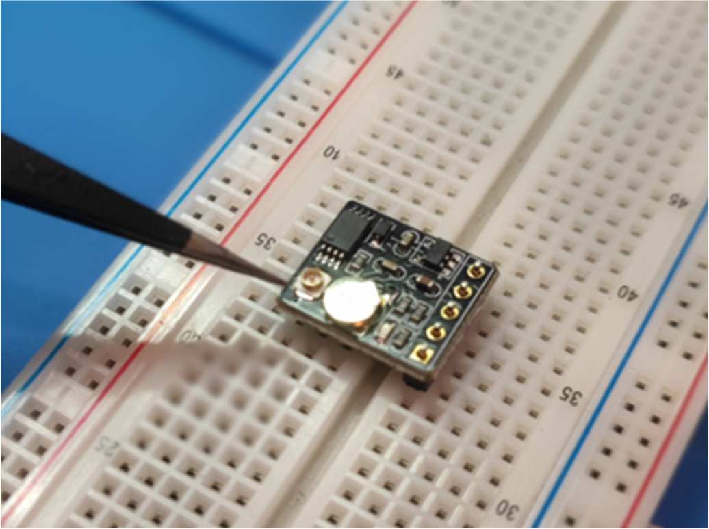
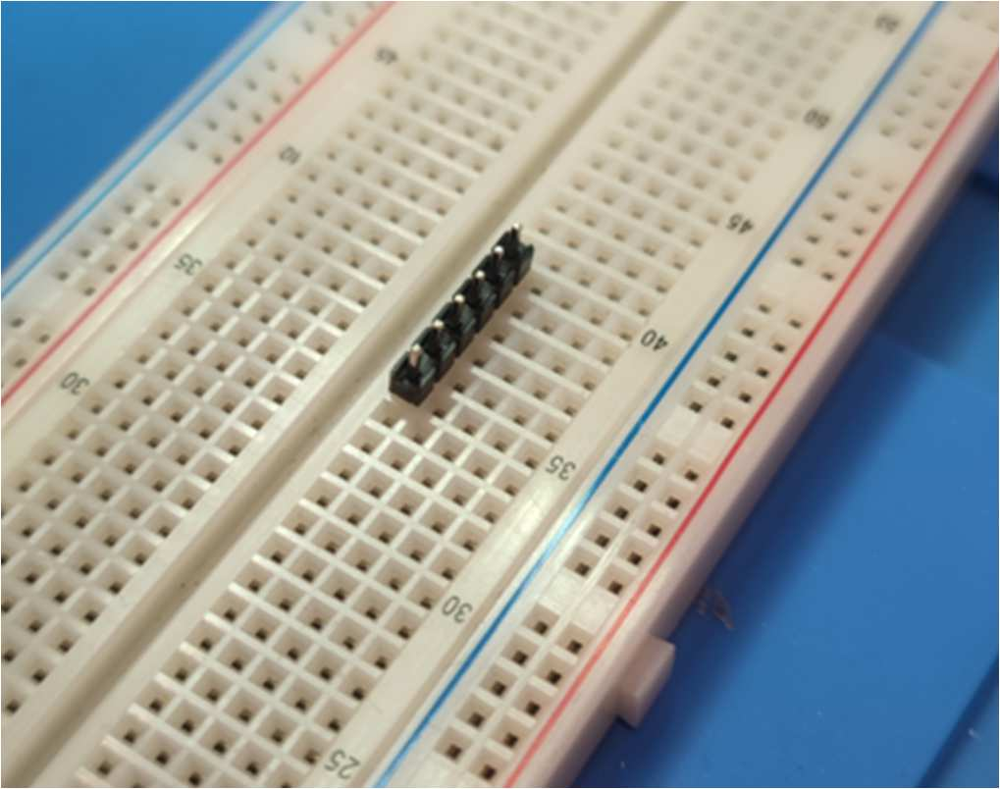
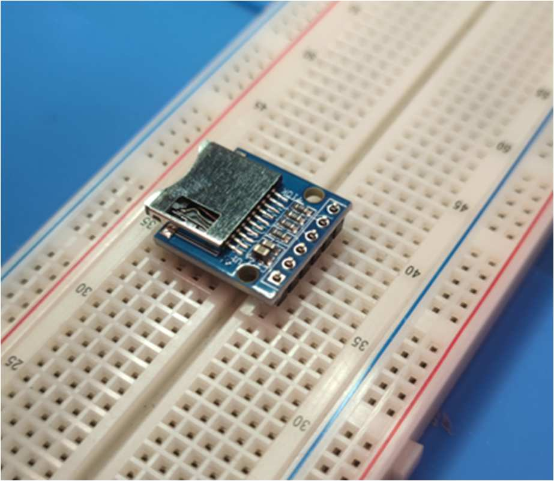

Examples:
GPS Module, ⚠️ make sure the antenna IPX connector is facing upwards.


SDCard module


Lora module (TIP: the screen does not need to come off before soldering)
Unscrew the three screws under the screen and hold the screen back to reach the pins near the glass and flex cable. Solder the pins, then put the screen back and refit the screws.
To save power, leave the screen fitted and turn it off with scripts/meshtastic_config.py --screen off.
The screen can also be desoldered permanently. This is advanced and at your own risk: Heltec publishes no removal procedure. A node without a screen must have its Bluetooth pairing PIN set over serial with scripts/meshtastic_config.py --pin NNNNNN.